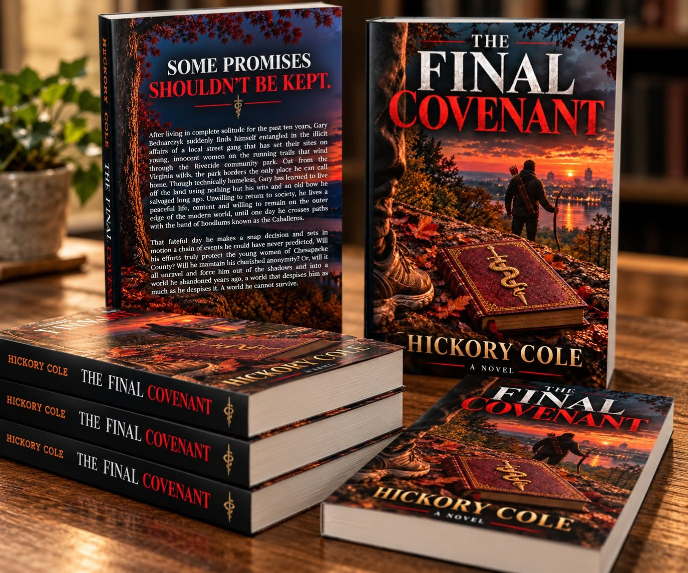

After living in complete solitude for the past ten years, Gary Bednarczyk suddenly finds himself entangled in the illicit affairs of a local street gang that has set its sights on young, innocent women on the running trails that wind through the Riverside community park.
Cut from the Virginia wilds, the park borders the only place he can call home. Though technically homeless, Gary has learned to live off the land using nothing but his wits and an old bow he salvaged long ago. Unwilling to return to society, he lives a peaceful life, content to remain on the outer edge of the modern world, until one day he crosses paths with the band of hoodlums known as the Caballeros.
As the Caballeros' plans begin to unravel, Detective Amy Brown is determined to uncover who is behind the disappearances and murders surrounding Riverside Park. Her investigation draws her closer to the gang—and eventually toward the mysterious outsider whose actions have already begun to disrupt their plans.
One fateful day, Gary makes a snap decision that sets in motion a chain of events he could never have predicted. His efforts to protect those caught in the Caballeros' violent world put him on a collision course with the gang and with Amy's investigation.
Will Gary be able to protect those who need him without exposing himself? Will Amy uncover the truth before the Caballeros can silence those who know too much? And when Gary is finally forced out of the shadows, can he survive the world he abandoned years ago—a world that despises him as much as he despises it?
Hickory Cole is the author of The Final Covenant, a crime thriller set against the wooded trails and communities of Chesapeake County, Virginia.
More information about Hickory Cole and future books will be added here.